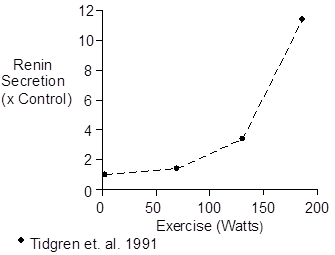
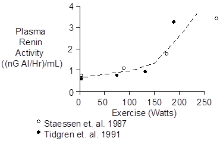
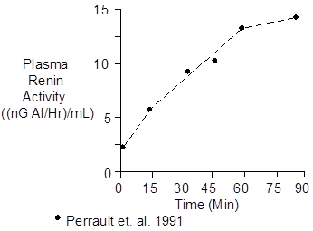
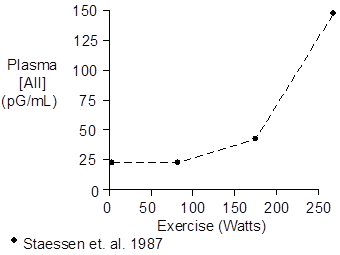
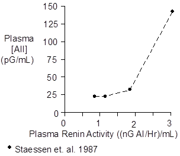

p Exercise > Renin And Angiotensin
Renin secretion is stimulated in exercise by increased renal nerve activity and increased plasma norepinephrine and epinephrine concentrations.
In addition, decreased renal blood flow (see Regional Blood Flow), decreased glomerular filtration rate (Castenfors 1967, Castenfors and Piscator 1967) and increased tubular sodium reabsorption modify the macula densa feedback signal to stimulate renin secretion.
Because of these stimuli, renal renin secretion rate increases in exercise in proportion to the intensity of the exercise, as shown below.

Following increased renin secretion, plasma renin activity (often abbreviated PRA) increases, as shown below.

Plasma renin activity increases with a time constant of 10 – 15 minutes. Thus, plasma renin activity measurements made during short-term exercise will probably not represent steady-state values. And, changes in renin secretion rate during prolonged exercise will be much more impressive than short-term changes in PRA (see above).

The data shown above were collected during upright cycling at 67% of maximum O2 uptake.
Increased PRA leads to increased plasma angiotensin I ([AI]) and angiotensin II ([AII]) concentrations.

With severe exercise, plasma angiotensin concentration rises proportionally much more than plasma renin activity (Staessen et. al. 1987, Tidgren et. al. 1991). The most likely explanation is that the developing lactic acidosis inhibits the angiotensinases (Khairallah and Page 1967), decreasing plasma angiotensin clearance.

 Chemistry
Chemistry
The structure of the decapeptide angiotensin I is shown below.
NH2-Asp-Arg-Val-Tyr-Val-His-Pro-Phe-His-Leu-COOH
The octapeptide angiotensin II is formed when converting enzyme nips the dipeptide His-Leu off C-terminal end of angiotensin I. The structure of angiotensin II is shown below.
NH2-Asp-Arg-Val-Tyr-Val-His-Pro-Phe-COOH
Ile replaces Val at position 5 in some species.
Molecular weight is about 1046. Composition is C49H70N14O11.
Angiotensin II concentration in plasma is typically 20 pG/mL.
Units
Plasma renin activity is quantified in terms of the ability of a sample to generate angiotensin I in the presence of excess renin substrate.
The units are Goldblatt units, which is an angiotensin generation rate of 1 nG per Hour per mL of plasma.
Popular units for plasma angiotensin II concentration are pMol/L and pG/mL.
To convert pMol/L to pG/mL, multiply by 1.05.
References
Castenfors, J. Renal clearances and urinary sodium and potassium excretion during supine exercise in normal subjects. Acta Physiol. Scand. 70:207-214, 1967.
Castenfors, J. and M. Piscator. Renal hemodynamics, urine flow and urinary protein excretion during exercise in supine position at different loads. Acta Med. Scand. Suppl. 472:231-244, 1967.
Juel, C., J. Bangsbo, T. Graham and B. Saltin. Lactate and potassium fluxes from human skeletal muscle during and after intense, dynamic, knee extensor exercise. Acta Physiol. Scand. 140:147-159, 1990.
Khairallah, P.A. and I.H. Page. Plasma angiotensinases. Biochem. Med. 1:1-8, 1967.
Perrault, H., M. Cantin, G. Thibault, G.R. Brisson, G. Brisson and M. Beland. Plasma atriopeptin response to prolonged cycling in humans. J. Appl. Physiol. 70:979-987, 1991.
Staessen, J., R. Fagard, P. Hespel, R.Lijnen, L. Vanhees and A. Amery. Plasma renin system during exercise in normal men. J. Appl. Physiol. 63:188-194, 1987.
Tidgren, B., P. Hjemdahl, E. Theodorsson and J. Nussberger. Renal neurohormal and vascular responses to dynamic exercise in humans. J. Appl. Physiol. 70:2279-2286, 1991.